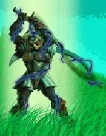

Forums galactiques > Assemblée Galactique : diplomatie officielle > Newdeun sera vendue aux enchères le 23/05
| Archimage Antonophix Respect diplomatique : 8  20/05 ETU 14:22 | Score : 0 Détails Je ne peux que Aprouver la farouche défense qu'a fait le Commandant Nevad,
Newdeun est certes la seul planetes disposant de moyens administratif de grande envergure, mais cela n'entrave en rien son histoire, et l'histoire même de sa réputation, Newdeun est le berceau de l'Alliance Eternelle ou ont siégé tous les représentissimes de la galaxie, Calumo, Arkk, Kela, Mon Grand Père, Karctak, Morcar Bauglir, Mon Père, avant que celui ci céde la souveraineté au heritier de l'Histoir et plus particuliérement a votre père Argin, depuis le peuple de Newdeun n'a fait que soufrir, soufrir pour une simple légétimité qu'un véritable gouvernement n'aurait pas besoin pour etre reconnu, Pauvre de vous, l'Alliance n'a que trop souffert de vos luttes pour le pouvoir, laissé donc notre capital a notre disposition pour désigner celui que nous souhaitons y voir siégé... | ||
| Gerolstein Respect diplomatique : 161  20/05 ETU 14:41 | Score : 1 Détails Newdeun n'est pas une vulgaire planète, j'en conviens.
Elle ne doit donc pas être vendu. Le commandant qui possédera cette planète dans un temps provisoire aura un rôle de défenseur. Il n'est pas forcément nécessaire qu'il soit très puissant. Mais que ce soit une personne en qui l'on a le plus confiance. Je propose donc qu'un vote est lieu. On observera donc quel est le commandant qui porte une confiance relativement élevée. Ce sera donc à lui que reviendra l'honneur de récupérer la planète en tant que défenseur. Ensuite les rares commandants qui ont l'hyperfusion pourront lui prêter main forte en tant qu'assistants protecteurs. Ce poste honnorable est tout de même provisoire. Voila pourquoi je propose que le commandant élu au poste de protecteur devra faire une promesse lorsqu'il aura ce poste. Qu'en dites-vous? | ||
| Archimage Antonophix Respect diplomatique : 8 20/05 ETU 18:12 | Score : 3 Détails Même si l'intention est bonne,
Votre esprit mathématique de guildiens vous empeche de voir, comme l'esprit brut des fédéré reflechissant avec leur muscle se qu'est Newdeun, Newdeun est et resteras la capital de l'alliance eternelle qui est seul a disposé de cette derniére, une erreur a eu lieu, en faire une planète sanctuaire abritant l'Assemblée Galactique, Desormais nous tous les alliantistes avont été spolié du joyeau qui nous berce ,siège de tous les contes qu'un Représentant énumère a ses enfants... Si éléction a lieu, et si un protecteur est désigné, celui ci doit etre un Représentant, comme ceux qui l'auront élu, Demandons nous la souveraineté de Keeh ou Leem? | ||
| Gerolstein Respect diplomatique : 161 20/05 ETU 18:46 | Score : 1 Détails Je propose une chose simple pour ce qui sont exaspérés par cette vente aux enchères de la planète administrative qui n'est en fait que pure duperie.
Lorsque les héritiers de l'histoire vont mettre en place la mise aux enchères de la sainte planète, je propose tout simplement un silence complet sur ce topic pour ceux qui partagent mon avis. Que les inconscients viennent dépenser leur argent! Le fou qui aura, non sans mal, acheter la sainte planète se verra subir ensuite une pression de notre part afin de devoir rendre la planète à l'élu de nous tous. C'est peut-être une méthode sévère envers le fou qui aura racheter la planète mais c'est la plus économique, la plus juste et la plus facile. | ||
| Koronag Respect diplomatique : 244  20/05 ETU 19:31 | Score : 1 Détails D'accord.Donc d'après vous,si tout le monde se tait,il n'y aura pas d'aprèsvous un type(genre moi) qui viendra deux minutes avant la fin de la mise aux enchères et donner un prix pourri et on sera obligé de me la donner HAHAHAHA JE SERAIS LE MAITRE DE LA GALAXIE?Vous pensez qu'un programme comme celui-la serait une bonne idée?
| ||
| Koronag Respect diplomatique : 244 20/05 ETU 19:40 | Score : 2 Détails J'espere pour vous.A moins que vous ne vouliez un Palais du Deuil au lieu de Newdeun.Si personne ne répond,soyez sûrs que je serais là.*Vite vite!Il faut qu'on achète!Faut pas qu'il l'ait!*
| ||
| darklink Respect diplomatique : 32  20/05 ETU 19:40 | Score : 2 Détails Cela revient quand meme à donner newdeun aux plus riches ou à la coalition la plus puissante.
| ||
| Hexarion Respect diplomatique : 75  20/05 ETU 20:12 | Score : 3 Détails Pas forcément si le nombre veut bien s'allier pour contrer le pouvoir des coalitions, alors le peuple possèdera Newdeum et en fera ce qu'il en voudra, la donnant aux élection ou non...
Regardez tout le monde y trouve son compte : Si un commandant est suffisemment riche pour contrer tous les autres alors cela voudra dire que la galaxie est divisée et que personne ne désire vraiment un pouvoir partagé. Cette solution reviendrait à mettre en valeur le côté égocentrique et hypocrite des républicains. Si une coalition possède assez de fonds pour remporter la vente alors cela voudra dire qu'elle a la volonté de diriger, qu'elle est riche et puissante et ce n'est pas si mal pour un gouvernement non ? Cela permettrai de fixer un propriétaire rapidement et ensuite rien n'empècherait de changer la donne si les choses tournaient mal... Et enfin si la joyeuse bande des partisans du vote démocratique souhaite vraiment montrer sa confiance en la démocratie dans sa forme la plus pure, alors qu'elle sa regroupe et achète ensemble la planète. A vous de voir si vous avez confiance en un commandant pour lui donner tous vos leems aveuglément... Personnellement si j'étais un gros malin je clâmerai haut et fort : "Me voila, grand défenseur de la démocratie, offrez moi vos richesses et je promet que je ferai don de Newdeum à qui gagnera les élections !" Et voila j'empocherai le pactole et sans même prendre la peine de prendre Newdeum je m'enfuierai et achèterai moulte vaisseaux pour me défendre contre toute attaque de mes anciens alliés furieux et devenir le plus puissant commandant de la galaxie ! Et puis de toute façon combien seront ceux qui donneront tout ce qu'ils ont pour le simple plaisir de voir des élections en bonne et due forme ? Super on donne tous ses leems pour qu'un autre prenne le pouvoir. Enfin bon tout ces palabres pour dire que nous verrons bien qui gagnera ces enchères, et le possesseur de Newdeum devra être écouté et respecté comme il se doit, alliantistes et républicains comme les autres malgré leurs probables protestations... Allez tous à vos tirelires, vos coalitions ont besoin de vous, mais ne vous en faites pas, vous récupèrerez tous vos biens (si bien sur votre président n'est pas un escroc comme le notre...) car vous ne gagnerez pas Newdeum : elle nous est promise et nous allons l'acheter, quel qu'en soit le prix, nous avons attendu cela pendant trop longtemps... | ||
| Néo Dracula Respect diplomatique : 201  20/05 ETU 20:27 | Score : 1 Détails Il est évident que ces enchères vont provoquer un chaos total dans cette galaxie...
Pour réagir à vos dires hexarion, si un commandant osait effectuer cette opération, il mettrait ainsi la moitié des commandants dans son dos et sa mort sera inéluctable meme s'il s'en retrouverait le plus puissant commandant.. | ||
| Gaston Lagaffe Respect diplomatique : 401  20/05 ETU 20:28 | Score : 2 Détails Une diode bleue clignota trois fois, annonçant la venue d'un hologramme. L'image de Lagaffe apparu.
Votre message est plein de justesse Hexarion. Mais l'ensemble des commandants ne souhaite pas forcément voir Newdeun aux mainx de la personne la plus puissante. Nous ne sommes pas en plutocratie. Quelle autre solution ont les commandants pour préserver la démocratie ? Faire confiance au plus riche ou au plus assoifé de pouvoir ? Au moins, laissez les commandants choisir en qui ils laissent leurs confiances. De plus, je trouve certain de vos propos insultant. Certainne personne ont fait bien plus que donner quelques leems. Certains sont morts pour la démocratie. Sans bruits, le reflet de Lagaffe disparut. | ||
| Perlelune Respect diplomatique : 299  20/05 ETU 20:38 | Score : 0 Détails Commandants de l'assemblée,
seul un fédéré peut occuper le trone de ce monde, usant de la force pour faire règner la paix, le despotisme bienveillant est la seule solution viable pour la galaxie. Certe il y eu des dérapements dus à des chiens, tel que fregger, illustre mais tyranique, que Greg, le lache et menteur, mais souvenez vous de commandeurs comme l'Atlante le protecteur ou Primarque le glacial bienveillant. | ||
| Sylvania Respect diplomatique : 394  20/05 ETU 20:58 | Score : 0 Détails On voit que certaines ne sont pas étouffées par la modestie, par ici...
mais cela vaut mieux pour gouverner Newdeun, car il faut une poigne de fer dans un gant de velours, et je ne vois rien de mieux qu'un alliantiste ou un fédéré pour tenir lieu au centre de l'univers, d'ailleurs pourquoi pas les deux ?? en vous laissant méditer a cela... | ||
| Gerolstein Respect diplomatique : 161 20/05 ETU 21:18 | Score : 1 Détails N'importe qui peut gouverner Newdeun s'il est jugé assez fort par nombre de commandants Originiens.
On peut être pour cela Fédéré, alliantiste ou Guildéen. Il ne s'agit pas de classes mais de la classe. Il ne faut pas être seulement fort militairement mais aussi moralement. | ||
| Hexarion Respect diplomatique : 75 20/05 ETU 21:20 | Score : 2 Détails Kamahl se tourna vers Neo Dracula en souriant :
"Mais oui mon ami vous avez raison ! A moins bien sur que l'exploiteur en question n'ait un ami fidèle à qui il enverra toute la cagnotte pour l'en faire profiter en toute impunité et se suicider ensuite pour mieux se réincarner, ou encore qu'il ne soit un anarchiste indécrottable comme on en trouve dans les recoins de la galaxie ayant profité de la destruction divine pour disparaitre et mieux semer le trouble dans la galaxie ensuite, ou encore tout simplement un commandant téméraire désirant attirer l'attention, voir même un traitre prèt à se sacrifier..." Puis il se tourna vers l'assisitance qui portait sur lui un regard outré, dubitatif ou interressé : "Dans tous les cas je ne peux que conseiller aux commandants de la galaxie de ne pas donner tous leurs fonds pour une stupide planète qui de toute façon ne leur reviendra jamais, les puissants ayant déja imposé leurs noms allant sans doute la récupèrer mais après tout qeulle importance ? Celà vaut-il la peine de sacrifier toutes ses maigres richesses ? De toute façon personne ne le saura si vous ne donner qu'une maigre partie de vos fonds, et il suffira d'inventer une escuse plausible. Pour ma part je refuse totalement de participer à cette enchère ridicule qui ne mènera à rien et j'invite toute âme sensée à me suivre dans cette voie..." | ||
| Néo Dracula Respect diplomatique : 201 20/05 ETU 21:37 | Score : 0 Détails Néo Dracula écouta les propos d'Hexarion attentivement puis il s'adressa à lui:
"bien sur mon cher Hexarion, j'ai omis les situations extremes et désespérées..." Puis il continua, cette fois-ci s'adressant à l'assemblée entière: "Finalement, je propose de laisser la sainte planète vierge, ainsi que tout le système auquel elle s'y trouve.On choisira ensuite des commandants pour effectuer régulièrement des bombardements hyperatomiques sur ce système et ainsi éléminer toute présence dans le système 0.Bien sur pour qu'une telle procédure se puisse faire, il faudra attendre quelques semaines pour trouver des commandants aptes à ce role. Qu'en dites-vous?" | ||
| Oyabun Respect diplomatique : 23 20/05 ETU 21:41 | Score : 4 Détails Après avoir visité Newdeun de fond en comble, ses hôtels inhabités et ses salles de congrés abandonnées, ses jardins envahis par les herbes folles, j'ai décidé de l'acheter, avec le petit pécule que j'ai constitué avec mes établissements de divertissement pour en faire le plus grand casino-bordel galactique.
Ainsi Newdeun, capitale galactique, sera rebaptisée Las Newas et aura enfin une vraie fonction : produire toujours plus de plaisir pour les commandants. Compte tenu des travaux à mettre en oeuvre pour réhabiliter ses palais, je recherche des associés prêts à investir dans ce qui deviendra bientôt le plus grand parc d'attractions intergalactiques pour adultes. | ||
| Prince Zheng Respect diplomatique : 38  20/05 ETU 22:02 | Score : 1 Détails Jamais Newdeun ne sera une maison de passes, Commandant. Ce serait faire une offense grave à tous nos glorieux ancêtres qui ont combattu et sont morts pour la posséder ou la défendre. Sachez que si jamais par le plus grand des malheurs cette planète devait vous échoir, je vous combattrais avec l'ensemble de mes troupes, dussé-je affaiblir mes Etats.
Cordialement, Prince Zheng. | ||
| Perlelune Respect diplomatique : 299 20/05 ETU 22:12 | Score : 1 Détails Je tenais aussi à dire que Keeh doit être réhabilité dans sa fonction premiére : Capitale militaire de la galaxie.
Des rumeurs parlent d'un canon galactique qu'Attilane y aurait caché dans le temps de la puissance des trois tyrans originels, il doit être retrouvé et mis sous le controle du fédéré qui obtiendra le statut de généralissime, ce dernier devant être réhabilité. | ||
| sayan69 Respect diplomatique : 572  20/05 ETU 22:15 | Score : 0 Détails Si la vie n'est pas un jeu qu'est ce qui l'est? N'y a-t'il rien de plus noble que de jouer sa vie...
Vive le bordel intergalactique et la jouissance universelle! | ||
| Actéon Respect diplomatique : 21  20/05 ETU 22:29 | Score : 1 Détails Nos espérances ne doivent pas se limité à la possession d'un grain de poussière. Il est malheureux de savoir que le désir de démocratie doit passer par cette planète. Dans le fond Newdeun n'est qu'un symbole d'une idéologie; qui se doit de dépasser ce stade matérialiste.
|
Forums galactiques > Assemblée Galactique : diplomatie officielle > Newdeun sera vendue aux enchères le 23/05